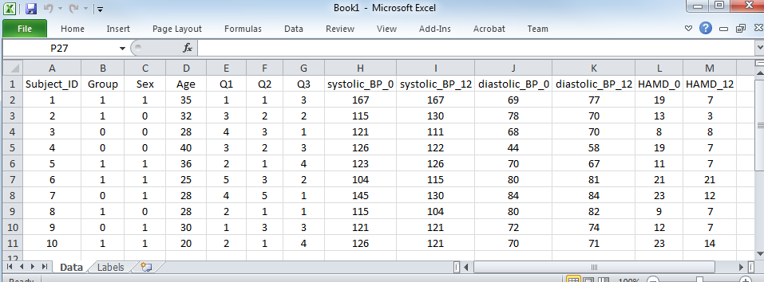
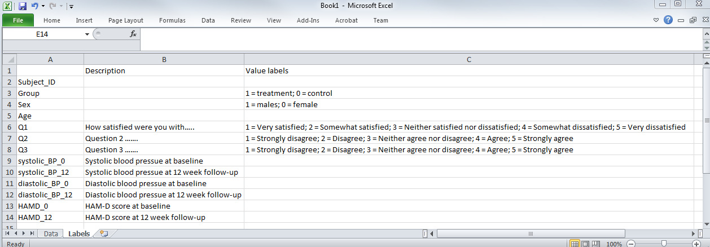

Data Formatting Checklist
Topic: Review of how data should be formatted to allow statisticians to quickly become familiar with your data to effectively facilitate data analyses.
Before sending any data to a statistician, review each point below and check off each item:
General Guidelines
All of the data is contained within one document or (if using Excel) within one sheet.
Delete any variables that will not be utilized by the statistician, such as variables collected as part of a larger study or descriptive text that was important when data was entered.
- Removing variables that are not important greatly aids the statistician as they attempt to become familiar with the data and gain a better understanding of it.
The outcome and primary ‘predictors’ of interest are easy to find in the dataset. A good rule of thumb is to have the outcome variable in the far most right column(s).
Remove any identifiable patient information, and give each participant a unique study identifier.
Emulate the example dataset and data dictionary below as closely as possible.
The Data File
An Example of a Dataset

Important features to follow:
Each row is an observation (e.g. a participant).
Each column is a variable representing one unique feature/attribute. For example, blood pressure (BP) is represented by two columns, one column for systolic BP and another for diastolic BP.
Categorical information (such as sex, ethnicity, etc) are consistently coded as either numbers or strings (letter(s) or word(s)). If you choose to code categorical variables with strings, make sure they are consistent (e.g. all male subjects are coded as “M” and not a variant thereof).
The data have no superfluous formatting. There are no bold titles, no borders, no colors, no shapes, no empty rows, and no plots. This is for ease of loading into statistical software.
Column headers are short, informative, and no not contain any special characters (e.g. !&^%$,<>?;“).
Good column name examples: “subject_id”, “subject”, “sex”, “is_male”, “systolic_bp_mmHg”.
Bad column names include: “Subject Id #”, “Sex (M = 1, F = 0)”, “Blood Pressure (mmHg)”. Note that these all have spaces and/or special characters.
The Data Dictionary
Sometimes, column names cannot explain the variable completely. You should always include a separate document/spreadsheet outlining the interpretation of the variables in greater detail. This is called a data dictionary (sometimes referred to as a codebook). Shown below is such a document:

Each column in the data set is listed and given a description. This is an ideal place to indicate units in which the measurements are made.
Value labels are included for interpretation purposes. If you code a category with a number (e.g. males = 1, females = 0), here is where you would elucidate your coding choices, as opposed to putting them in the columns).
Other Important Considerations
- If you transform the data in anyway (e.g. bucket a continuous measure, like age, into discrete categories) keep the original variable in an adjacent column for reference.
- If you have dates included in your data (e.g. date of enrollment, date of birth), please keep them in a consistent format. The preferred format is YYYY/MM/DD.
- Missing data is a fact of life. If data is missing, leave the cell blank or fill it with NA (for not available). Be sure to include somewhere in your data dictionary that you have used NA for missing data.
- There is a difference between data missing because it can’t be collected for some reason (e.g. malfunction of a piece of equipment) and missing data because of non-response (e.g. patient refuses to answer a question); these should be specified in the data dictionary. If a patient refuses to answer a question, code that explicitly as an option (e.g. Refused to answer).
- Before sending the data to a statistician check the minimum and maximum value of each variable and ensure that they are consistent with what you would expect (to identify data entry mistakes)